01
Fiber Optic
Instalasi dan maintenance jaringan Fiber Optic, FTTH, ODP, ODC, ONT dan terminasi.
HELLO, I'M
Teknisi jaringan dengan pengalaman dalam instalasi, maintenance, dan troubleshooting Fiber Optic, FTTH, RT/RW Net serta instalasi dan maintenance perangkat BTS.
NETWORK
01 / ABOUT ME
Saya merupakan teknisi jaringan dengan pengalaman di bidang Fiber Optic, FTTH, RT/RW Net, serta instalasi perangkat BTS.
Terbiasa melakukan instalasi, maintenance, troubleshooting, pengukuran jaringan, dokumentasi teknis, dan bekerja mengikuti SOP serta standar keselamatan kerja.
Memahami alur jaringan Fiber Optic mulai dari POP, ODC, ODP hingga client serta dasar perangkat OLT, ONT dan networking.
02 / SKILLS
Beberapa kemampuan teknis yang digunakan dalam pekerjaan lapangan.
Instalasi dan maintenance jaringan Fiber Optic, FTTH, ODP, ODC, ONT dan terminasi.
Pengujian jaringan menggunakan OTDR dan Optical Power Meter untuk pengecekan kualitas jaringan.
Basic IP Networking, RT/RW Net, OLT, ONT dan MikroTik basic.
Instalasi dan maintenance perangkat BTS, RRU, feeder dan perangkat pendukung.
Memahami parameter dasar RF seperti VSWR, RSRP dan SINR.
Penerapan SOP pekerjaan dan keselamatan kerja dalam pekerjaan lapangan.
03 / EXPERIENCE
04 / DOCUMENTATION
Dokumentasi pekerjaan Fiber Optic, FTTH, networking dan BTS.
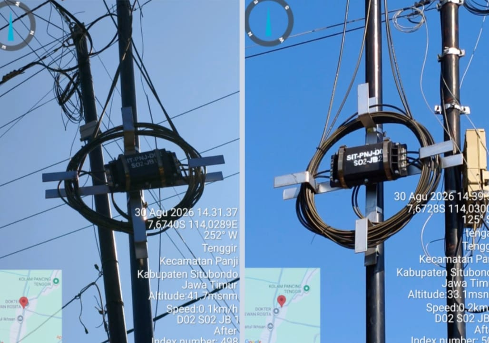
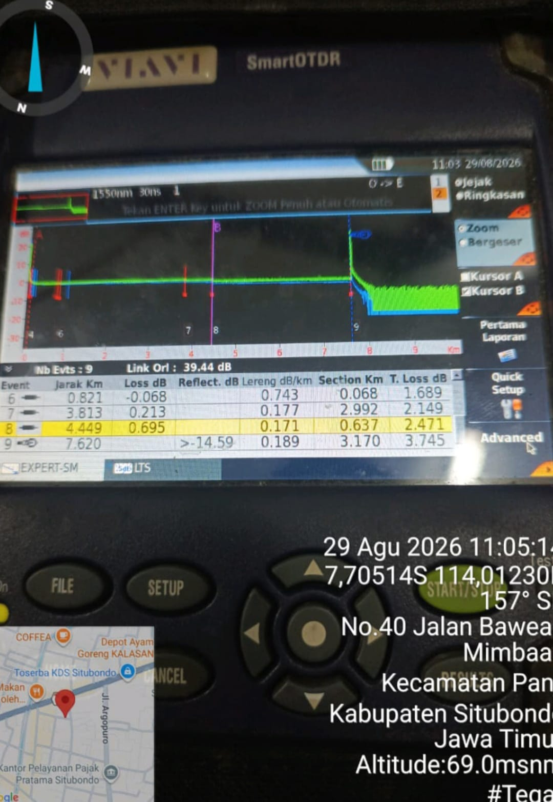
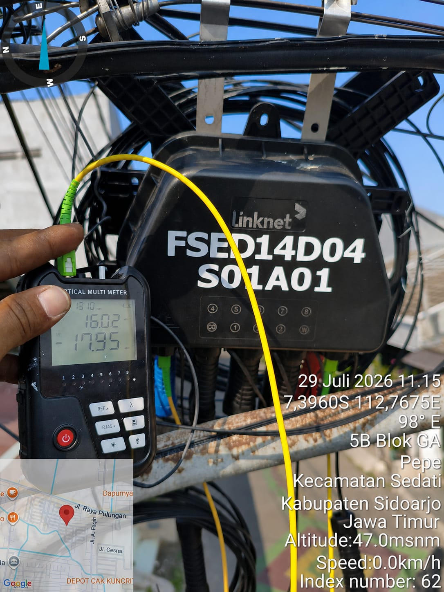
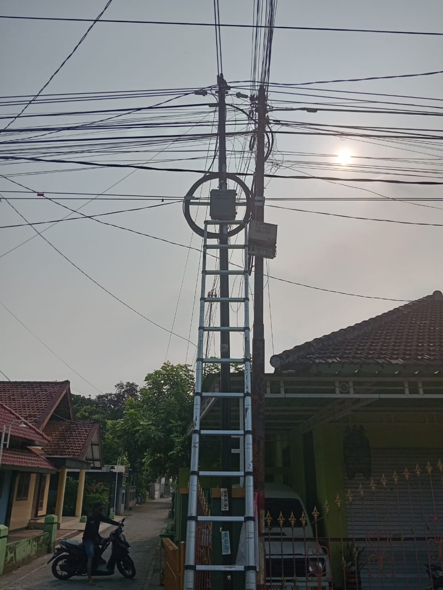
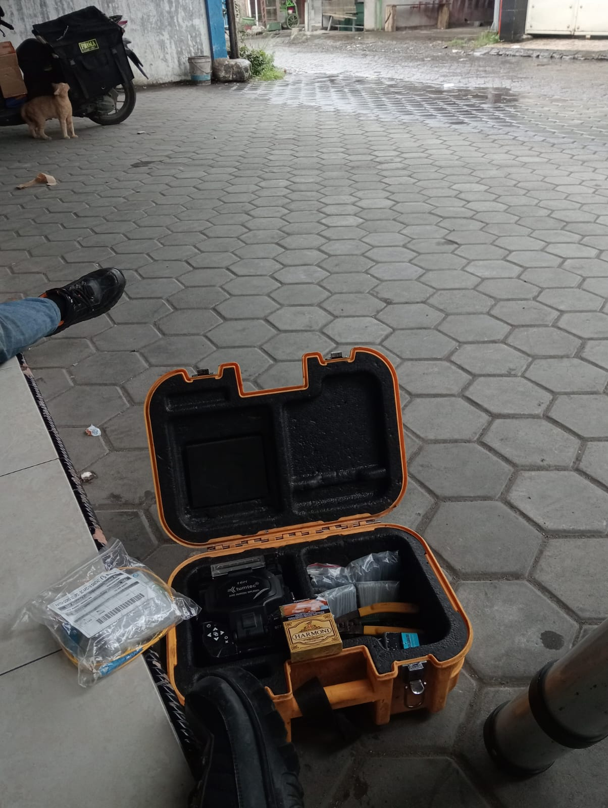
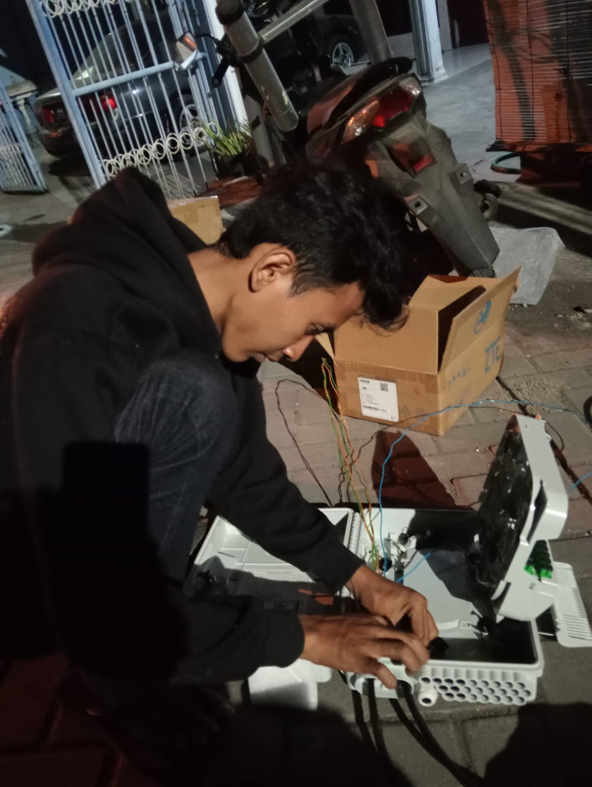
Dokumentasi pekerjaan instalasi, maintenance dan pengujian jaringan Fiber Optic dan FTTH.
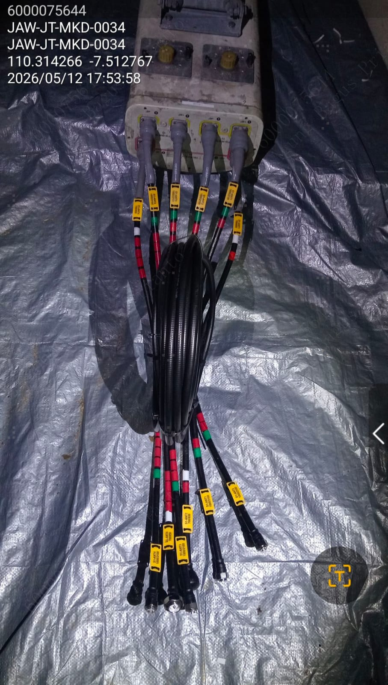
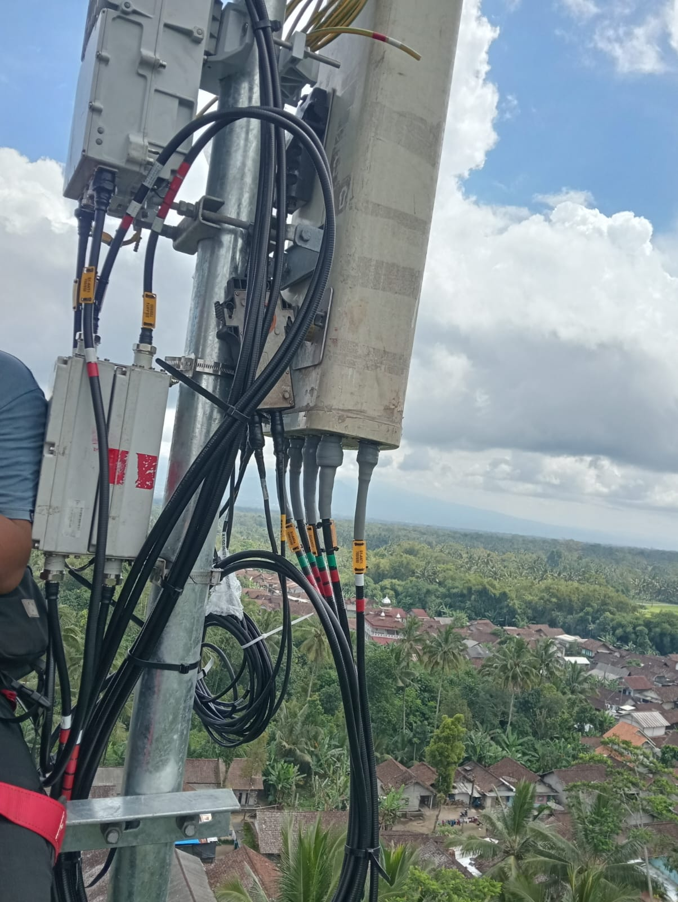
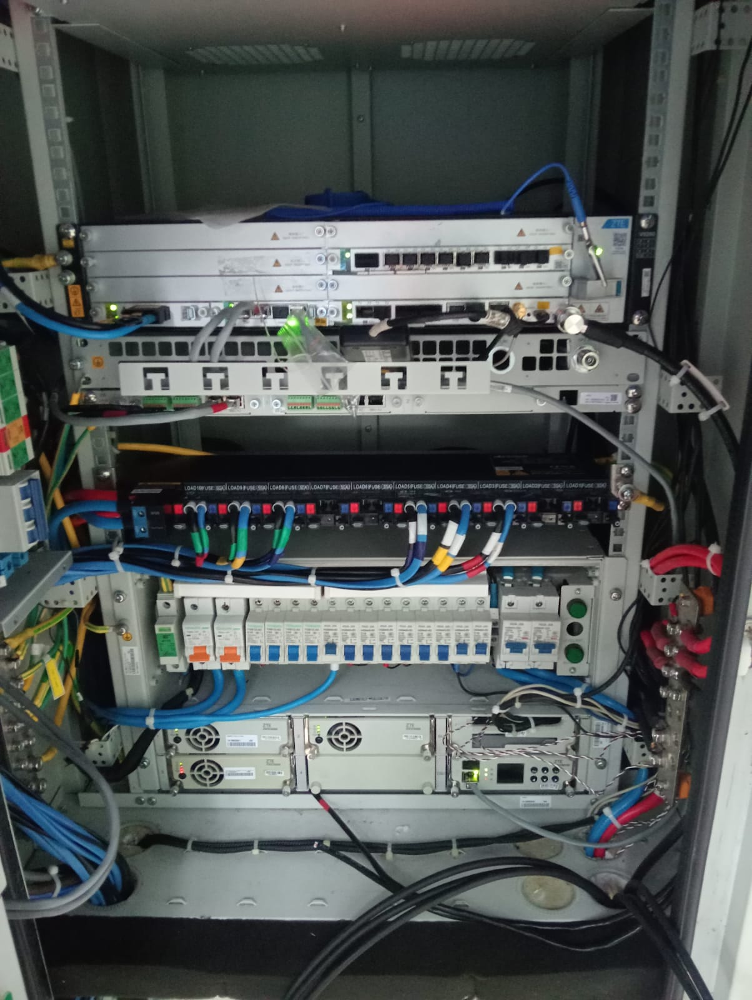
Dokumentasi pekerjaan instalasi perangkat telekomunikasi pada site BTS.
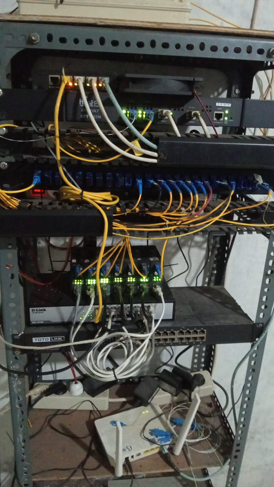
Dokumentasi perangkat dan infrastruktur jaringan RT/RW Net.
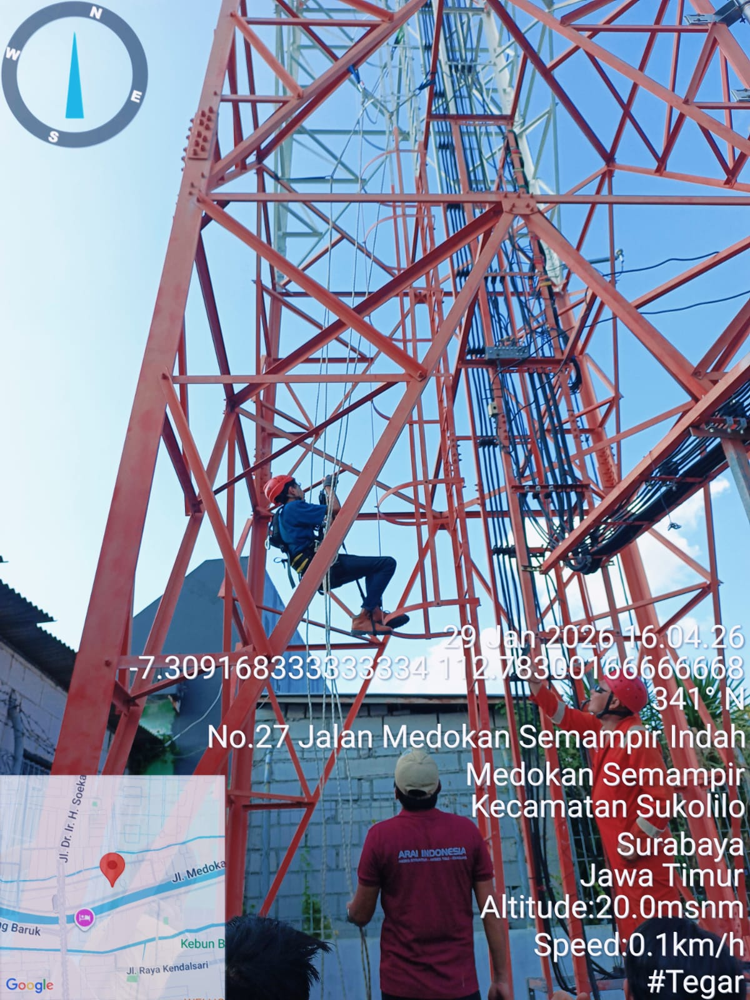
Dokumentasi pelatihan dan penerapan keselamatan kerja untuk pekerjaan lapangan.
05 / EDUCATION
Akuntansi
Nilai Rata-rata: 86,28
06 / CONTACT
Terbuka untuk peluang kerja, project jaringan, Fiber Optic, maupun bidang IT.